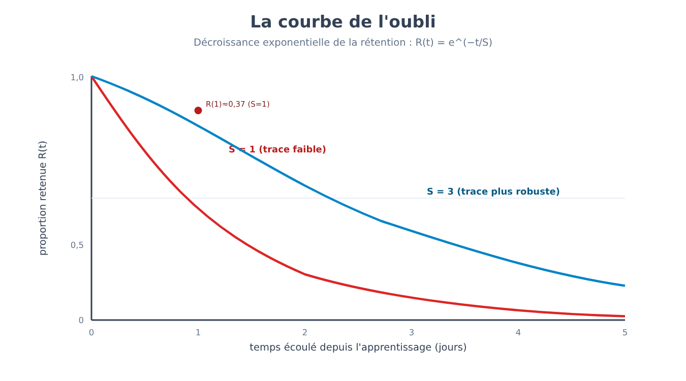
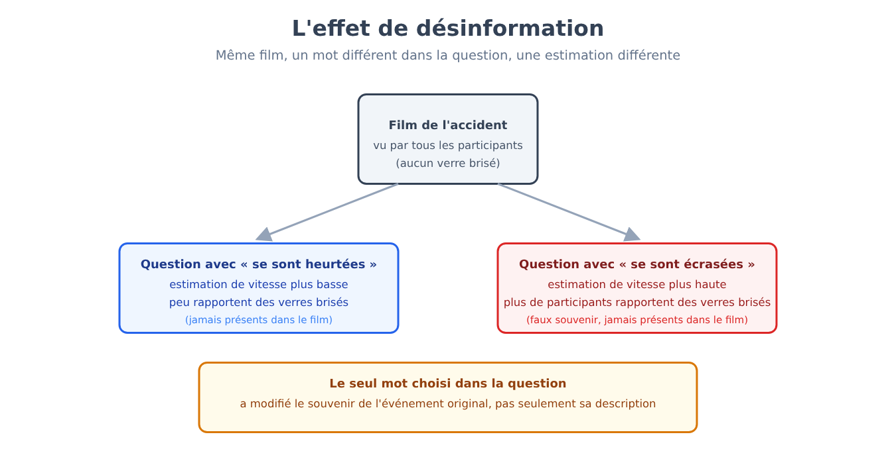
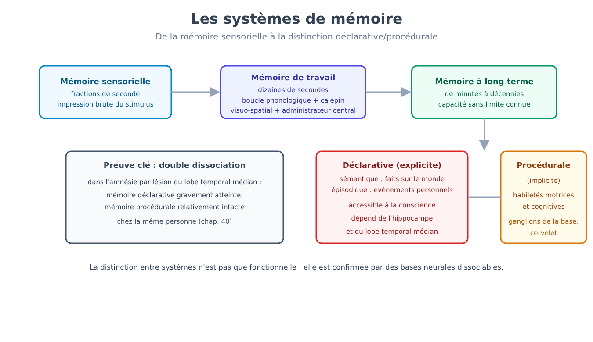
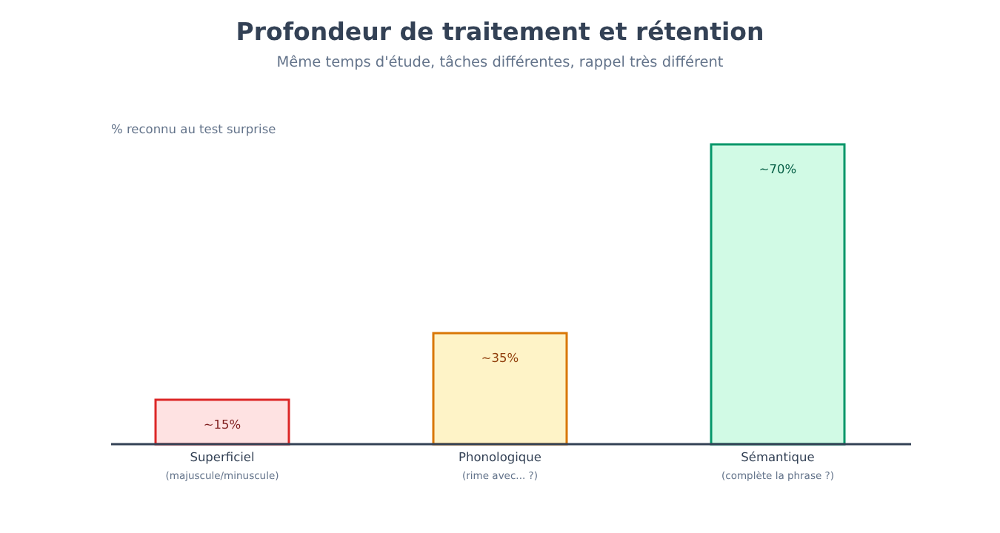
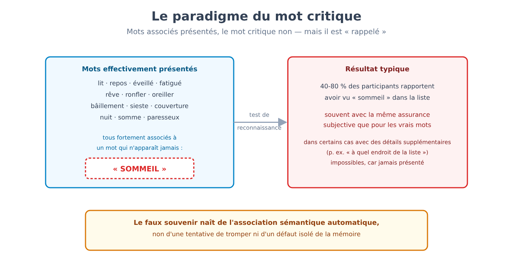
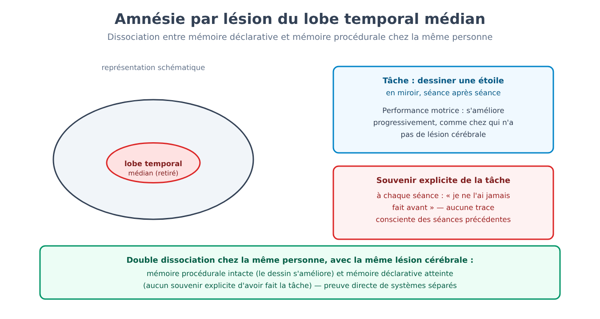

Partie VI. Mémoire et apprentissage
Chapitre 34 — Les premières expériences sur la mémoire
[EN DEUX MOTS]
La mémoire semble le territoire le moins adapté à la méthode expérimentale : comment mesurer quelque chose qui se passe dans la tête d'une personne, sans aucun moyen de l'observer directement ? Ce chapitre expose la première tentative réussie — un expérimentateur qui s'étudia lui-même pendant des années, parvint à rendre l'oubli numérique, et découvrit une régularité qui est aujourd'hui encore à la base de toute technique d'apprentissage espacé dans le temps.
Un problème qui semblait ne pas pouvoir recevoir de réponse quantitative
Vers la fin du XIXe siècle, la mémoire faisait déjà l'objet de réflexions philosophiques depuis des millénaires, mais non de mesure. Le problème n'était pas le manque d'intérêt : c'était le manque de méthode. Se souvenir d'un poème, d'un événement, d'un visage dépend d'un nombre énorme de facteurs incontrôlables — à quel point la personne s'y intéressait, ce qu'elle savait déjà sur le sujet, combien d'autres fois elle avait rencontré des contenus semblables. Pour mesurer l'oubli de façon propre, il fallait un matériel dépourvu de signification antérieure : quelque chose que personne n'avait jamais appris auparavant, sous aucune forme.
La solution fut la construction d'un matériel artificiel : les syllabes sans signification (nonsense syllables), séquences consonne-voyelle-consonne dépourvues de sens dans toute langue connue de ceux qui les étudiaient (par exemple « ZUP », « REL », « TOK »). Des milliers de combinaisons de ce type furent générées, mélangées, et utilisées comme matériel à apprendre par cœur dans des listes de longueur contrôlée.
[LE PLAN DE L'EXPÉRIENCE]
La méthode, appliquée par l'expérimentateur (Hermann Ebbinghaus, première étude systématique sur la mémoire, 1885) à lui-même au cours de milliers de séances échelonnées sur plusieurs années, fonctionnait ainsi : une liste de syllabes sans signification était lue à voix haute à rythme constant, en répétant la liste entière jusqu'à ce qu'elle puisse être récitée parfaitement par cœur une fois. Le nombre de répétitions nécessaires pour atteindre ce critère était enregistré. Après un intervalle de temps contrôlé — qui pouvait varier de vingt minutes à un mois — la même liste était réapprise jusqu'au même critère, et l'on enregistrait de nouveau le nombre de répétitions nécessaires. La différence entre les deux mesures est l'économie (savings) : si la liste avait été entièrement oubliée, le nombre de répétitions pour la réapprendre aurait été identique à celui du premier apprentissage (économie nulle) ; si quelque chose était resté, le réapprentissage aurait été plus rapide, en proportion de ce qui était resté. L'économie est donc une mesure indirecte mais quantitative de ce qui a été retenu, même lorsque la personne n'est pas capable de réciter consciemment quoi que ce soit de la liste originale.
En répétant cette procédure à des intervalles de temps croissants, on vit émerger une courbe extrêmement régulière : la courbe de l'oubli (forgetting curve). La perte d'information n'est pas linéaire dans le temps : elle est très rapide durant les premières heures — une grande partie de l'économie disparaît dès le premier jour — puis ralentit progressivement, pour devenir presque plate au bout de quelques semaines. Le matériel qui survit à un mois tend à rester sensiblement stable pendant beaucoup plus longtemps.
[FORMULE]
Une description approximative, mais utile, de la courbe de l'oubli est une décroissance exponentielle :
R(t) = e^(−t / S)
Où :
• R(t) est la proportion de matériel retenu (mesurée, par exemple, au moyen de l'économie) au temps t après l'apprentissage initial.
• t est le temps écoulé depuis l'apprentissage, dans une unité cohérente quelconque (ici : des jours).
• S est la force de la trace mnésique, un paramètre qui représente la stabilité avec laquelle l'information a été encodée : plus S est grand, plus la décroissance est lente.
• e est la base des logarithmes naturels (≈2,718).
Exemple de calcul. Avec une trace de force S = 1 jour (un apprentissage faible, comme une liste lue une seule fois), après t = 1 jour la proportion retenue est :
R(1) = e^(−1/1) = e^(−1) ≈ 0,37
Un peu plus d'un tiers subsiste après un seul jour. Après t = 3 jours, avec la même force de trace :
R(3) = e^(−3/1) = e^(−3) ≈ 0,05
Environ 5 % subsiste après trois jours : l'essentiel de la perte a eu lieu dès les premières vingt-quatre heures, un schéma que le modèle saisit bien le premier jour. Le modèle exponentiel ne décrit toutefois bien que la chute initiale : dans les données réelles la queue est plus lente, et une fonction de puissance s'ajuste mieux sur le long terme. Un apprentissage plus robuste (par exemple obtenu en répétant le matériel plusieurs fois, ou en répartissant les répétitions dans le temps) correspond à une valeur de S plus élevée, qui allonge la queue de la courbe sans en changer la forme générale.

Pourquoi répéter une seule fois ne suffit pas, et pourquoi espacer les répétitions fonctionne mieux que les accumuler
Le même dispositif expérimental permit d'isoler un second résultat, tout aussi solide et aux conséquences pratiques directes : à nombre total de répétitions égal, répartir les répétitions dans le temps (par exemple une par jour pendant une semaine) produit une rétention à long terme sensiblement meilleure que de les concentrer toutes en une seule session (par exemple sept répétitions d'affilée). Ce résultat — l'effet d'espacement (spacing effect) — est parmi les plus répliqués de toute la psychologie cognitive, et reste valable à travers des matériels très divers : listes de mots, faits historiques, vocabulaire d'une langue étrangère, procédures motrices.
[CHIFFRES]
Dans des études de laboratoire contrôlées, la différence de rétention à plusieurs semaines de distance entre apprentissage espacé et apprentissage massé (à temps total d'étude égal) est, dans de nombreuses études de laboratoire, de plusieurs points de pourcentage, jusqu'à plus de dix, de matériel supplémentaire rappelé correctement ; l'intervalle d'espacement optimal dépend du temps pendant lequel on veut se souvenir, et croît avec lui. L'explication la plus accréditée aujourd'hui n'est pas un mécanisme unique, mais une combinaison : chaque répétition espacée demande un effort de récupération légèrement plus grand (parce que la trace s'est entre-temps un peu affaiblie), et cet effort de récupération renforce la trace davantage qu'une répétition immédiate, lorsque l'information est encore tout à fait accessible et demande donc peu de travail cognitif pour être répétée.
Le principe n'était pas totalement inconnu avant ces expériences — enseignants et élèves l'avaient probablement pressenti depuis des siècles — mais sa première quantification rigoureuse, avec une courbe reproductible et une méthode explicite pour la mesurer, est ce qui a permis de construire à partir de lui : des techniques de répétition espacée utilisées aujourd'hui dans l'apprentissage des langues aux logiciels qui programment automatiquement la répétition suivante en fonction du temps déjà écoulé depuis la dernière.
[ATTENTION AU SAUT LOGIQUE]
Les syllabes sans signification furent choisies exprès pour éliminer le sens — mais cela signifie aussi que les résultats obtenus avec ce matériel ne se transfèrent pas automatiquement à un matériel riche de sens, organisé, relié à des connaissances préalables. La forme générale de la courbe (rapide au début, puis plus lente) se retrouve aussi avec un matériel signifiant, mais les temps absolus sont différents, souvent beaucoup plus lents, parce que le sens offre de multiples points d'appui pour la récupération que les syllabes sans signification ne peuvent offrir. Le chapitre 3 a déjà introduit ce problème en termes généraux, à propos de la validité écologique des expériences de laboratoire : ici, c'est un exemple direct et concret de cette tension, non une exception isolée.
[L'ESSENTIEL DU CHAPITRE]
• Les syllabes sans signification ont permis la première mesure quantitative de l'oubli, grâce à la méthode de l'économie dans le réapprentissage.
• La courbe de l'oubli décrit une décroissance rapide durant les premières heures, suivie d'un ralentissement progressif — approximable par une décroissance exponentielle, R(t) = e^(−t/S).
• L'effet d'espacement montre que des répétitions réparties dans le temps produisent une rétention à long terme supérieure à un nombre égal de répétitions concentrées, avec un avantage qui, dans de nombreuses études, va de quelques points à plus de dix points de pourcentage de matériel retenu en plus.
• Les résultats obtenus avec un matériel dépourvu de sens ne se transfèrent pas automatiquement, en valeur absolue, à un matériel signifiant — une limite de validité écologique à garder en tête, non un défaut de la méthode.
Chapitre 35 — La mémoire comme reconstruction
[EN DEUX MOTS]
L'intuition commune traite la mémoire comme un enregistrement : un événement se produit, il est « sauvegardé », et s'en souvenir revient à « rouvrir le fichier ». Ce chapitre expose pourquoi cette image est fausse sur le fond, et non seulement dans les détails : chaque acte de récupération est un processus actif de reconstruction, qui utilise des connaissances générales pour combler les lacunes inévitables d'une trace incomplète — et qui peut, pour cette raison, introduire des distorsions systématiques, prévisibles, non aléatoires.
Un schéma peut modifier un souvenir sans que la personne s'en aperçoive
La première étude systématique sur la nature reconstructive (Frederic Bartlett, étude sur la reproduction sérielle d'une histoire, 1932 ; la procédure était informelle, sans analyse statistique, et les distorsions se révélèrent moindres lorsqu'on insistait sur l'exactitude) utilisa comme matériel une histoire tirée du folklore d'une culture éloignée de celle des participants, riche en éléments qui ne s'accordaient pas avec leurs attentes narratives habituelles (événements surnaturels non expliqués, une structure non linéaire, des noms propres peu familiers).
[LE PLAN DE L'EXPÉRIENCE]
On lisait l'histoire deux fois aux participants, puis on leur demandait de la reproduire de mémoire à des intervalles croissants — de quelques minutes jusqu'à plusieurs mois plus tard, dans certains cas en répétant la reproduction plusieurs fois avec la même personne (reproduction sérielle répétée). En comparant les versions successives avec l'original, un schéma cohérent de distorsions émergea, non aléatoires mais systématiques : les éléments peu familiers ou incohérents avec le schéma (schema) — la structure d'attentes préexistantes sur la manière dont une histoire « devrait » être faite — étaient omis, simplifiés, ou transformés en quelque chose de plus familier et de plus cohérent avec la culture du participant. Un détail surnaturel non expliqué tendait à disparaître dans les reproductions successives, ou à recevoir une explication rationnelle jamais présente dans l'original, ajoutée par le participant lui-même sans qu'il ait conscience de l'avoir fait.
Ce résultat — connu comme effet de rationalisation au sein d'un effet plus large de reconstruction schématique — montra que le souvenir n'était ni une copie pâlie ni une reproduction qui reste fidèle à l'original : c'était un récit activement reconstruit à chaque reproduction, utilisant le schéma disponible pour combler les lacunes et rendre l'histoire plus sensée selon ses propres catégories, fût-ce au prix de s'éloigner systématiquement des faits.
Les questions peuvent créer des souvenirs qui ne se sont jamais produits
Un second courant de recherche (Elizabeth Loftus et John Palmer, expérience sur l'effet de désinformation, 1974), développé des décennies plus tard avec des méthodes bien plus contrôlées, montra que la reconstruction peut être influencée non seulement par des schémas généraux préexistants, mais par une information spécifique introduite après l'événement — un phénomène appelé effet de désinformation (misinformation effect).
[LE PLAN DE L'EXPÉRIENCE]
On montre aux participants un court film d'un accident de la route. Juste après, ils répondent à des questions sur ce qui s'est passé : à la moitié des participants on demande « à quelle vitesse roulaient les voitures quand elles se sont heurtées ? », à l'autre moitié la même question mais avec un verbe différent, par exemple « quand elles se sont emboutées ? » ou « quand elles se sont écrasées ? ». Le seul choix du verbe dans la question — un détail linguistique apparemment sans importance, et non une information fausse déclarée comme telle — modifie systématiquement l'estimation de vitesse rapportée : les verbes qui impliquent un impact plus violent produisent des estimations de vitesse plus élevées. Dans une variante ultérieure, aux participants à qui l'on avait posé la question avec le verbe « écraser » on demanda ensuite, une semaine plus tard, s'ils avaient vu des vitres brisées dans le film (le film n'en montrait pas) : ce groupe rapporta avoir vu des vitres brisées dans une proportion significativement plus grande que le groupe à qui l'on avait posé la question avec un verbe plus neutre.

L'information trompeuse introduite après l'événement — dans la question même, et non dans une tentative explicite de tromper — est incorporée au souvenir de l'événement original, au point de produire le souvenir de détails jamais réellement observés. Cela ne signifie pas que la mémoire soit peu fiable en toute circonstance de la même manière : cela signifie qu'elle est susceptible à un type spécifique et prévisible de distorsion, particulièrement pertinent chaque fois que quelqu'un est interrogé à plusieurs reprises sur le même événement, avec des questions formulées de manières légèrement différentes — la situation typique d'un interrogatoire de police ou d'un témoignage au tribunal.
[IDÉE REÇUE]
L'idée que la mémoire fonctionne comme une caméra vidéo — qu'elle enregistre fidèlement chaque détail d'une expérience, disponible pour être « revisionné » grâce à la bonne technique (par exemple l'hypnose) — reste très répandue, y compris chez des professionnels qui travaillent avec des témoignages. Les données expérimentales disponibles contredisent cette image de façon nette : la mémoire d'un événement est reconstruite chaque fois qu'elle est récupérée, en utilisant à la fois la trace originale (qui peut être incomplète ou dégradée) et des informations ultérieures, des schémas généraux et des attentes — avec pour résultat qu'après des interrogatoires répétés, des suggestions ou le passage du temps, l'assurance subjective avec laquelle une personne rapporte un souvenir n'est pas un indicateur fiable de son exactitude objective (dans les conditions non contaminées, au premier test, la confiance initiale est en revanche un assez bon indicateur) : un souvenir entièrement reconstruit et faux peut être rapporté avec la même assurance subjective qu'un souvenir exact, voire avec une assurance plus grande.
Le lien entre reconstruction et production de souvenirs entièrement faux — non seulement déformés dans les détails, mais inventés dans la substance — sera traité en entier au chapitre 39, avec ses implications pour le témoignage judiciaire et pour les pratiques thérapeutiques.
[L'ESSENTIEL DU CHAPITRE]
• La mémoire n'est pas un enregistrement fidèle mais un processus de reconstruction active, qui a lieu à chaque acte de récupération, et non seulement au moment de l'encodage.
• Les schémas préexistants guident la reconstruction, produisant des omissions et des rationalisations systématiques des éléments incohérents avec les attentes culturelles de la personne qui se souvient.
• L'effet de désinformation montre qu'une information introduite après l'événement, même par la seule formulation d'une question, peut être incorporée au souvenir de l'événement original.
• Après suggestion ou répétitions, l'assurance subjective avec laquelle un souvenir est rapporté n'est pas un indicateur fiable de son exactitude — un principe repris en entier au chapitre 39 à propos des faux souvenirs.
Chapitre 36 — Magasins et systèmes
[EN DEUX MOTS]
« Mémoire » n'est pas une faculté unique, mais un terme générique pour des systèmes différents, aux propriétés différentes et — comme le montrent des cas cliniques que le chapitre 40 traitera en entier — aux bases neurales au moins en partie dissociables. Ce chapitre expose l'architecture de ces systèmes : combien de temps ils retiennent l'information, quelle quantité ils peuvent en contenir, et quelle distinction sépare le savoir que du savoir comment.
Trois magasins aux propriétés très différentes
Un premier modèle, influent pendant des décennies, distingue la mémoire selon la durée pendant laquelle l'information y demeure. La mémoire sensorielle (sensory memory) retient une impression brute du stimulus sensoriel pendant une fraction de seconde — suffisante pour percevoir le mouvement continu dans une série d'images fixes, ou pour « entendre » encore un instant un son qui vient de s'achever. La mémoire à court terme (short-term memory), ou plus justement mémoire de travail (working memory) dans sa conception la plus récente, retient une quantité limitée d'information pendant quelques dizaines de secondes, à moins qu'elle ne soit activement répétée ou élaborée. La mémoire à long terme (long-term memory) retient l'information pendant des périodes allant de quelques minutes à plusieurs décennies, avec une capacité qui, pour autant qu'on le sache, n'a pas de limite pratique mesurable.
La capacité de la mémoire à court terme a longtemps été décrite par le chiffre approximatif de « sept éléments plus ou moins deux » — le nombre de chiffres, de lettres ou de mots non reliés qu'une personne peut répéter immédiatement après les avoir entendus une seule fois. Des recherches ultérieures ont révisé cette estimation à la baisse, indiquant une limite plus proche de quatre éléments lorsqu'on exclut la possibilité de regrouper l'information en unités plus grandes (chunking) : Miller lui-même, dans le travail de 1956 d'où naît le chiffre de sept, observait que la limite concernait des unités regroupables (chunks), non des éléments isolés ; l'estimation d'environ quatre, proposée par Cowan en 2001, reste du reste débattue (entre trois et cinq, selon les auteurs). Le chunking lui-même — regrouper des éléments isolés en unités signifiantes plus grandes (par exemple, retenir un numéro de téléphone sous la forme de trois blocs plutôt que de dix chiffres isolés) — reste néanmoins le moyen le plus efficace d'augmenter la quantité effective d'information retenable, sans changer le nombre de « slots » disponibles.
La mémoire de travail n'est pas un magasin passif
Le modèle de la mémoire à court terme comme simple magasin temporaire a été progressivement remplacé par des modèles de mémoire de travail, qui la décrivent comme un système actif doté de composantes spécialisées qui manipulent l'information, et pas seulement la retiennent. Un modèle influent (Alan Baddeley et Graham Hitch, 1974, avec des révisions ultérieures) distingue une boucle phonologique (phonological loop), dédiée à l'information verbale et auditive, un calepin visuo-spatial (visuospatial sketchpad), dédié à l'information visuelle et spatiale, et un administrateur central (central executive) qui coordonne les deux systèmes et gouverne l'allocation de leurs ressources attentionnelles — se reliant directement aux mécanismes d'attention sélective traités au chapitre 30. Des révisions ultérieures du modèle ont ajouté un buffer épisodique (episodic buffer), un système qui intègre l'information issue des deux sous-systèmes avec la mémoire à long terme en représentations temporaires plus riches — nécessaire, par exemple, pour comprendre une phrase complexe qui exige de tenir ensemble son, sens et contexte pendant qu'on l'écoute.
[LE PLAN DE L'EXPÉRIENCE]
L'une des preuves les plus directes en faveur de composantes séparées pour l'information verbale et visuo-spatiale est la double tâche : demander à une personne d'exécuter deux tâches simultanément, l'une verbale (par exemple répéter à voix haute une séquence de nombres) et l'autre visuo-spatiale (par exemple suivre du regard un point qui se déplace sur un écran, en maintenant une représentation mentale de sa trajectoire). Si les deux tâches partageaient la même ressource limitée, les exécuter ensemble devrait dégrader les performances sur les deux, de façon comparable à ce qui se produit lorsqu'on combine deux tâches du même type (par exemple deux tâches verbales). Les résultats montrent systématiquement le schéma inverse : deux tâches du même type (verbale avec verbale, spatiale avec spatiale) interfèrent fortement entre elles, tandis qu'une tâche verbale et une tâche spatiale exécutées ensemble se nuisent réciproquement beaucoup moins — une preuve directe de ressources au moins partiellement séparées, et non d'un magasin unique partagé.
Savoir que et savoir comment sont des systèmes différents
Une seconde distinction, orthogonale à la première, sépare la mémoire à long terme selon le type de contenu. La mémoire déclarative (declarative memory), ou explicite, concerne les faits et les événements accessibles à la conscience et pouvant être rapportés verbalement : elle comprend à son tour la mémoire sémantique (semantic memory), pour les connaissances générales sur le monde dépourvues de contexte d'apprentissage spécifique (savoir que Rome est la capitale de l'Italie, sans se rappeler quand on l'a appris), et la mémoire épisodique (episodic memory), pour les événements spécifiques situés dans le temps et dans l'espace de l'expérience personnelle (se souvenir d'un dîner d'anniversaire particulier). La mémoire procédurale (procedural memory), ou implicite, concerne en revanche les habiletés motrices et cognitives acquises par la pratique — faire du vélo, taper sur un clavier sans regarder les touches — accessibles seulement par l'exécution, non par le récit verbal : celui qui sait faire du vélo parvient rarement à décrire avec des mots comment il garde l'équilibre.
La preuve la plus forte de cette distinction vient de cas cliniques d'amnésie grave, dans lesquels la capacité de former de nouveaux souvenirs déclaratifs se trouve compromise de façon dramatique tandis que la capacité d'acquérir de nouvelles habiletés motrices reste relativement intacte — la même personne qui ne se souvient pas d'avoir jamais exécuté une tâche motrice auparavant peut néanmoins s'améliorer progressivement dans cette tâche, séance après séance, sans aucune conscience explicite de l'amélioration. Le chapitre 40 traitera en entier ces cas et ce qu'ils ont appris sur l'organisation neurale de la mémoire.

[L'ESSENTIEL DU CHAPITRE]
• La mémoire s'articule en systèmes aux propriétés temporelles différentes : sensorielle (fractions de seconde), de travail (quelques dizaines de secondes sans répétition active), à long terme (de quelques minutes à plusieurs décennies).
• L'estimation classique de « sept éléments plus ou moins deux » pour la capacité de la mémoire de travail a été révisée à la baisse (environ quatre éléments non regroupés) ; le chunking reste le principal moyen d'augmenter l'information retenable.
• Les modèles actuels décrivent la mémoire de travail comme un système actif aux composantes séparées (boucle phonologique, calepin visuo-spatial, administrateur central, buffer épisodique), et non comme un magasin passif unique.
• La mémoire à long terme se divise en déclarative (faits et événements, accessible à la conscience) et procédurale (habiletés, accessible seulement par l'exécution) — une distinction aux solides bases neurales, traitée en entier au chapitre 40.
Chapitre 37 — Encodage, consolidation, récupération
[EN DEUX MOTS]
Pourquoi certaines expériences restent-elles gravées pendant des décennies et d'autres s'évanouissent-elles en quelques minutes ? Ce chapitre expose ce qui rend une trace mnésique plus ou moins durable au moment de l'encodage, comment une trace d'abord fragile se stabilise avec le temps, et pourquoi la manière dont une information est récupérée peut, paradoxalement, la renforcer davantage que la simple révision.
Toute élaboration ne produit pas le même souvenir
Un principe central, aujourd'hui bien établi, est que la qualité de la rétention dépend moins du temps passé à étudier un matériel que du type d'élaboration auquel il est soumis — ce qu'on appelle la profondeur de traitement (levels of processing; Fergus Craik et Robert Lockhart, 1972). Traiter un stimulus à un niveau superficiel (par exemple, juger si un mot est écrit en majuscules ou en minuscules) produit une trace faible ; le traiter à un niveau phonologique (juger s'il rime avec un autre mot) produit une trace intermédiaire ; le traiter à un niveau sémantique (juger s'il convient au sens d'une phrase, en le reliant activement à des connaissances déjà possédées) produit la trace la plus durable, à temps total consacré à la tâche égal.
[LE PLAN DE L'EXPÉRIENCE]
On présente aux participants une liste de mots, avec une tâche différente pour chaque mot, attribuée de manière aléatoire : pour certains mots, ils doivent seulement juger s'ils sont écrits en majuscules ; pour d'autres, s'ils riment avec un mot donné ; pour d'autres encore, s'ils complètent correctement le sens d'une phrase. On ne dit pas aux participants qu'ils devront ensuite se rappeler les mots : la tâche de traitement est présentée comme l'unique objectif (apprentissage incidentel). Lors d'un test de reconnaissance surprise, administré après la liste, les mots traités sémantiquement sont reconnus correctement dans une proportion nettement supérieure à ceux traités seulement au niveau graphique ou phonologique — bien qu'aucun groupe n'ait eu l'intention explicite de mémoriser quoi que ce soit. La rétention dépend de la profondeur du traitement cognitif, et non de l'intention déclarée de se souvenir.
Un second principe, complémentaire, est que la récupération fonctionne mieux lorsque les conditions au moment de la récupération ressemblent à celles présentes au moment de l'encodage — la dépendance au contexte (context-dependent memory). Un matériel appris dans un certain environnement physique, ou dans un certain état interne (par exemple un niveau particulier d'activation émotionnelle), est récupéré plus facilement dans un environnement ou un état semblable — un principe aux implications directes pour la pratique de l'étude (varier le contexte d'étude réduit la dépendance à un seul environnement) et pour le témoignage (ramener un témoin sur le lieu d'un événement peut faciliter son souvenir, avec les précautions qui s'imposent quant au risque de suggestion déjà discuté au chapitre 35).
Se rappeler renforce plus que réviser
Un résultat qui a profondément changé les recommandations pratiques sur l'étude est l'effet de test (testing effect) : se soumettre à une tentative de récupération active de l'information (par exemple répondre à une question ouverte) produit une rétention à long terme supérieure à un temps égal passé à relire passivement le même matériel — même lorsque, au moment du test initial, la personne se trompe et doit ensuite voir la réponse corrigée.
[CHIFFRES]
Dans les études qui comparent directement les deux stratégies à temps total investi égal, l'avantage de l'effet de test par rapport à la simple relecture, mesuré une semaine ou plus après l'étude initiale, est de taille moyenne dans les méta-analyses (g autour de 0,5), plus grand avec feedback et à plusieurs jours de distance ; dans une expérience classique, environ 61 % du matériel est rappelé après une semaine avec l'épreuve de récupération contre environ 40 % avec la relecture (à des tests très rapprochés, en revanche, la relecture peut l'emporter). L'avantage tend à croître à mesure que l'intervalle entre l'étude et la vérification finale s'allonge — le même schéma général déjà rencontré à propos de l'effet d'espacement au chapitre 34, dont l'effet de test partage en partie le mécanisme : la récupération active, comme la répétition espacée, demande un effort cognitif que la seule relecture ne demande pas, et cet effort renforce la trace.
Enfin, la phase entre l'encodage et la récupération n'est pas un intervalle passif de simple permanence de la trace. La consolidation (consolidation) est le processus, qui demande du temps — des heures pour la consolidation au niveau synaptique, des mois ou des années pour la consolidation au niveau des systèmes cérébraux impliqués, comme on l'a déjà annoncé à propos du rôle du sommeil au chapitre 26 — par lequel une trace d'abord fragile et vulnérable à l'interférence devient progressivement plus stable.
La consolidation au niveau synaptique a un corrélat cellulaire bien étudié : la potentialisation à long terme (PLT), rencontrée au chapitre 25. Dans sa phase précoce, la PLT dure d'une à quelques heures et ne requiert pas la synthèse de nouvelles protéines ; la phase tardive, beaucoup plus durable, l'exige, et chez les rongeurs bloquer la synthèse protéique juste après l'apprentissage empêche le souvenir de se stabiliser. Le test causal le plus connu concerne le récepteur NMDA du chapitre 25 : des rats à qui l'on administrait un médicament qui le bloque pendant l'entraînement dans un labyrinthe aquatique (Morris et collègues, 1986) n'apprenaient pas à localiser la plate-forme cachée, tout en nageant et en voyant normalement. Le résultat montre que ces processus sont nécessaires pour ce type d'apprentissage ; il ne montre pas que la PLT soit l'unique mécanisme de la mémoire, et l'extension à l'être humain reste en grande partie inférentielle. Un résultat plus récent et à certains égards surprenant est que la consolidation n'est pas un processus à sens unique et définitif : lorsqu'un souvenir déjà consolidé est réactivé (par exemple en le récupérant consciemment, ou même simplement en étant exposé à un élément fortement associé à lui), la trace peut revenir temporairement à un état labile, semblable à celui de l'encodage initial, pour devoir ensuite être reconsolidée (reconsolidation). Durant cette fenêtre de labilité, la trace peut être modifiée — renforcée, affaiblie, ou, dans certaines études sur l'animal, même effacée pharmacologiquement — d'une manière qui ne serait pas possible sur un souvenir qui n'aurait pas été tout juste réactivé.
[QUESTION CONTROVERSÉE]
Le phénomène de la reconsolidation, bien documenté dans des études sur l'animal avec des interventions pharmacologiques précises au moment de la réactivation, a suscité de grandes attentes pour le traitement des souvenirs traumatiques chez l'être humain : si un souvenir devient temporairement modifiable chaque fois qu'il est réactivé, il pourrait en principe être affaibli de façon ciblée durant cette fenêtre. Les tentatives de traduire ce résultat en traitements cliniques fiables pour l'être humain ont cependant produit des résultats beaucoup plus inconstants que dans les études animales : on ne sait pas clairement quelles conditions (dose, calendrier, type de réactivation) sont nécessaires pour ouvrir la fenêtre de labilité de façon fiable dans un cerveau humain, et plusieurs tentatives de réplication des premiers résultats prometteurs n'ont pas atteint les mêmes effets. Le mécanisme de base — la réactivation peut rendre un souvenir temporairement modifiable — est aujourd'hui considéré comme solide ; son applicabilité clinique pratique et fiable reste, en l'état actuel de la recherche, un objectif non encore atteint plutôt qu'une technique consolidée.

[L'ESSENTIEL DU CHAPITRE]
• La profondeur de traitement au moment de l'encodage (superficielle, phonologique, sémantique) détermine la qualité de la rétention davantage que le temps total consacré à l'étude.
• La récupération fonctionne mieux lorsque le contexte au moment de la récupération ressemble à celui de l'encodage (dépendance au contexte).
• L'effet de test montre que la récupération active renforce la mémoire plus que la relecture passive, avec un effet de taille moyenne, plus grand à plusieurs jours de distance.
• La consolidation n'est pas définitive : un souvenir réactivé peut redevenir temporairement labile et nécessiter une reconsolidation, un phénomène solide dans les études animales mais pas encore traduit en une application clinique fiable pour l'être humain.
Chapitre 38 — L'oubli et ses mécanismes
[EN DEUX MOTS]
Oublier n'est pas un phénomène unique avec une seule cause. Ce chapitre expose trois mécanismes principaux, à côté du simple déclin, par lesquels l'information devient inaccessible ou est activement rendue telle — et reprend, avec des outils empiriques différents, un problème déjà rencontré au chapitre 10 à propos du refoulement psychanalytique.
L'interférence, et pas seulement le déclin
Pendant une grande partie du XXe siècle, l'explication dominante de l'oubli ne fut pas le simple déclin (decay) de la trace avec le passage du temps, mais l'interférence (interference) : la perte d'accessibilité d'un souvenir causée par la présence d'autres souvenirs, et non par le temps en soi. On distingue deux directions : l'interférence proactive (proactive interference), dans laquelle des apprentissages antérieurs perturbent le souvenir d'un matériel appris plus récemment (par exemple, avoir du mal à retenir un nouveau numéro de téléphone parce que l'ancien continue de s'immiscer), et l'interférence rétroactive (retroactive interference), dans laquelle des apprentissages ultérieurs perturbent le souvenir d'un matériel appris auparavant (apprendre une seconde langue étrangère qui rend temporairement plus difficile de rappeler le vocabulaire de la première).
[LE PLAN DE L'EXPÉRIENCE]
Un plan classique pour isoler l'interférence rétroactive compare deux groupes qui apprennent la même liste A de paires de mots associés. Un groupe apprend ensuite une seconde liste B, avec les mêmes stimuli mais des réponses différentes (par exemple, si dans la liste A la paire était « table-chaise », dans la liste B elle pourrait être « table-lampe ») ; l'autre groupe, pendant le même intervalle de temps, accomplit une tâche sans rapport (par exemple un test de calcul). Lors du test final sur la liste A originale, le groupe qui a appris la liste B interférente montre un souvenir significativement moins bon que le groupe de contrôle, bien que les deux groupes aient eu le même intervalle de temps entre l'apprentissage original et le test — la seule différence est ce qu'ils ont fait durant cet intervalle, et non le temps écoulé.
Un second mécanisme, distinct de l'interférence entre traces différentes, est l'inhibition due à la récupération (retrieval-induced forgetting; Michael Anderson, Robert Bjork et Elizabeth Bjork, 1994) : le simple fait de récupérer avec succès un souvenir peut rendre temporairement plus difficile la récupération d'autres souvenirs liés, associés à la même catégorie ou au même contexte — comme si la récupération sélective d'un élément supprimait activement ses concurrents, au lieu de se limiter à renforcer l'élément récupéré sans effet sur les autres.
La suppression directe d'un souvenir indésirable
Un troisième mécanisme, plus controversé mais soutenu par de nombreuses données expérimentales, avec toutefois une réplicabilité mitigée (certains laboratoires n'ont pas reproduit l'effet), est la suppression directe (directed suppression; paradigme « penser/ne pas penser » de Michael Anderson et Collin Green, 2001) de la récupération : la possibilité d'empêcher activement, par un effort intentionnel, qu'un souvenir spécifique atteigne la conscience lorsqu'on rencontre un indice qui l'évoquerait normalement.
[LE PLAN DE L'EXPÉRIENCE]
On apprend aux participants une association entre des paires de mots (par exemple « ordalie-cafard »). Ensuite, on ne présente que le premier mot de la paire (l'indice), avec une consigne différente selon la condition : dans certains essais, on demande aux participants de penser activement au mot associé (se rappeler) ; dans d'autres, on leur demande explicitement d'éviter que ce mot leur vienne à l'esprit (supprimer), sans le remplacer par autre chose. Lors d'un test final de mémoire sur l'ensemble de la liste, les paires de la condition de suppression sont rappelées significativement moins bien que les paires rappelées activement et — point crucial du plan — que des paires jamais réactivées durant la phase intermédiaire. Le seul fait d'avoir reçu l'indice et d'avoir fourni un effort pour ne pas penser à la réponse associée produit un effet d'oubli mesurable, supérieur à la simple absence de révision.
Des études de neuro-imagerie menées durant cette tâche montrent un schéma cohérent avec un mécanisme de contrôle actif : durant la suppression, on observe une augmentation d'activation dans des régions préfrontales associées au contrôle cognitif, accompagnée d'une réduction d'activation dans les régions du lobe temporal médian (y compris l'hippocampe) typiquement impliquées dans la récupération — un schéma compatible avec l'idée qu'un mécanisme de contrôle descendant inhibe activement le processus de récupération lui-même, et pas seulement son expression comportementale.
[TIENT-ON ENCORE ?]
Le lien entre ce mécanisme expérimental de suppression volontaire — démontré avec un matériel neutre, des paires de mots dépourvues de signification émotionnelle pour le participant — et le mécanisme du refoulement psychanalytique décrit au chapitre 10, appliqué à des contenus chargés de signification personnelle et menaçants pour l'équilibre psychique, reste une extension, et non une équivalence démontrée. La tâche expérimentale montre qu'une suppression intentionnelle et consciente de la récupération est possible et a des conséquences mesurables sur la mémoire ultérieure : c'est un résultat solide. Que le même mécanisme, étendu à des contenus émotionnellement chargés et rendu automatique et inconscient avec le temps, corresponde exactement au processus de refoulement supposé par la théorie psychanalytique reste une hypothèse plausible mais non vérifiée directement — les expériences disponibles montrent qu'un mécanisme de suppression motivée existe dans le répertoire cognitif humain, non que c'est ce mécanisme qui opère dans les cas cliniques auxquels se référait la théorie psychanalytique.
[L'ESSENTIEL DU CHAPITRE]
• L'interférence, et pas seulement le déclin avec le temps, est responsable d'une grande part de l'oubli : proactive (l'ancien perturbe le nouveau) et rétroactive (le nouveau perturbe l'ancien).
• L'inhibition due à la récupération montre que se rappeler avec succès un élément peut supprimer temporairement d'autres souvenirs liés.
• La suppression directe démontre expérimentalement qu'un souvenir peut être rendu temporairement moins accessible par un effort intentionnel, avec un corrélat neural cohérent (augmentation du contrôle préfrontal, réduction d'activation dans le lobe temporal médian).
• Le lien entre la suppression directe expérimentale et le refoulement psychanalytique du chapitre 10 est une extension plausible, et non une équivalence démontrée : les deux mécanismes n'ont pas encore été identifiés comme un seul et même processus.
Chapitre 39 — Faux souvenirs
[ATTENTION AU SAUT LOGIQUE]
Ce chapitre traite de la possibilité, expérimentalement démontrée, de produire des souvenirs, rapportés avec conviction, d'événements qui ne se sont jamais produits. Le fait qu'un souvenir puisse être construit artificiellement en laboratoire, avec des méthodes connues et documentées, n'implique pas — et ce chapitre ne le soutient à aucun endroit — qu'un souvenir spécifique rapporté par une personne réelle, dans un contexte thérapeutique ou en dehors, soit faux : établir l'exactitude d'un souvenir particulier demande des preuves indépendantes, au cas par cas, et non une inférence générale à partir de ces résultats de laboratoire.
[EN DEUX MOTS]
Le chapitre 35 a montré que la mémoire reconstruit et peut être déformée. Ce chapitre va plus loin : il montre qu'il est possible, avec des méthodes expérimentales contrôlées, de produire le souvenir détaillé et subjectivement convaincant d'un événement entier qui ne s'est jamais produit — avec des implications directes, et délicates, pour le témoignage judiciaire et pour certaines pratiques thérapeutiques.
Un paradigme de laboratoire pour produire des faux souvenirs de façon fiable
La méthode la plus utilisée et la plus répliquée pour produire des faux souvenirs en laboratoire (paradigme conçu par James Deese, 1959, et repris sous la forme aujourd'hui standard par Henry Roediger et Kathleen McDermott, 1995) repose sur un principe simple : exploiter l'association sémantique automatique entre les mots pour générer le « souvenir » d'un mot jamais présenté.
[LE PLAN DE L'EXPÉRIENCE]
On présente aux participants une liste de mots tous fortement associés à un unique mot critique, qui n'apparaît toutefois jamais dans la liste (par exemple : « lit, repos, éveillé, fatigué, rêve, ronfler, oreiller, bâillement, sieste... » — tous associés au mot critique « sommeil », absent de la liste). Peu après, lors d'un test de reconnaissance ou de rappel libre, une proportion considérable de participants rapporte avoir vu le mot critique dans la liste originale, souvent avec un niveau d'assurance subjective égal ou supérieur à celui rapporté pour les mots effectivement présentés — et dans de nombreux cas avec la sensation de se rappeler l'avoir entendu, et pas seulement de le trouver familier, bien que le mot n'ait jamais été présenté.
[CHIFFRES]
Dans la version standard de ce paradigme, la proportion de participants qui rapporte à tort le mot critique comme présenté varie beaucoup selon la liste utilisée et le type de test : avec les meilleures listes, environ 40-60 % des participants rappellent le mot critique et une part encore plus grande le reconnaît comme présenté, tandis qu'avec d'autres listes le taux descend à environ 10 %. L'effet est parmi les plus constants de la recherche expérimentale sur la mémoire, répliqué dans des centaines d'études avec des matériels et des populations différents.

Un second courant de recherche (Elizabeth Loftus et Jacqueline Pickrell, étude du souvenir implanté de s'être perdu dans un centre commercial, 1995), avec un objectif plus directement pertinent pour le contexte thérapeutique et judiciaire, a montré qu'il est possible d'implanter le souvenir d'épisodes autobiographiques entiers qui ne se sont jamais produits, et pas seulement de mots isolés.
[LE PLAN DE L'EXPÉRIENCE]
On présente aux participants un recueil de brefs récits d'événements de leur enfance, obtenus en interrogeant un proche parent : trois événements réellement survenus, et un quatrième événement inventé par les chercheurs mais rendu plausible (par exemple, s'être perdu dans un centre commercial étant enfant, un événement choisi parce que courant mais non vérifié comme étant arrivé à ce participant précis). On demande aux participants d'écrire tout ce dont ils se souviennent pour chaque événement, y compris l'événement inventé, au cours de plusieurs séances successives échelonnées sur quelques semaines. Une part non négligeable des participants — entre un quart et un tiers, selon l'étude — en vient à rapporter un « souvenir » de l'événement inventé, l'enrichissant souvent progressivement de détails sensoriels et émotionnels (qui se trouvait là, ce qu'ils ressentaient, ce qu'ils portaient) lors des séances suivantes, sans aucune conscience que l'événement ne s'était jamais produit.
Ce second résultat montre que l'implantation de faux souvenirs ne requiert pas de techniques particulièrement élaborées ou manipulatrices : la seule combinaison d'une suggestion répétée venant d'une source faisant autorité (les chercheurs, présentés comme détenteurs d'une information familiale fiable) et d'un effort imaginatif répété de reconstruction peut suffire, dans une minorité substantielle de cas, à produire un souvenir que le participant rapporte avec conviction, même si dans l'étude originale les souvenirs implantés se révélaient en moyenne moins clairs et moins riches que les vrais.
Les implications, avec la prudence qu'elles exigent
Ces résultats ont exercé une influence directe sur deux domaines pratiques. Dans le premier, le témoignage oculaire, ils ont contribué à une révision des procédures d'enquête recommandées — par exemple, éviter les questions qui suggèrent une réponse, et documenter avec précision la formulation exacte de chaque question posée à un témoin, pour la raison déjà vue au chapitre 35 à propos de l'effet de désinformation. Dans le second, plus délicat, ils concernent le débat sur les souvenirs retrouvés dans un contexte thérapeutique — souvenirs d'événements, dans certains cas d'abus subis dans l'enfance, qu'une personne rapporte avoir retrouvés au cours d'un parcours thérapeutique après des années ou des décennies d'apparente absence de la conscience.
[QUESTION CONTROVERSÉE]
Ce débat, souvent appelé dans la littérature professionnelle la « guerre de la mémoire » (memory wars), oppose deux positions soutenues l'une et l'autre par des professionnels compétents, et aucune des deux positions ne nie la solidité des données expérimentales exposées ici. Une position souligne que les données sur les faux souvenirs montrent un mécanisme réel et puissant, et que certaines techniques thérapeutiques historiquement utilisées pour « retrouver » des souvenirs refoulés (hypnose, imagerie guidée répétée, interprétation des rêves orientée vers la recherche d'un abus) partagent des éléments structurels avec les paradigmes expérimentaux qui produisent des faux souvenirs en laboratoire — rendant certains souvenirs retrouvés par ces techniques potentiellement peu fiables, indépendamment des intentions du thérapeute. L'autre position souligne que l'oubli puis la récupération de souvenirs authentiques d'abus infantile est un phénomène documenté indépendamment par des cas avec preuves externes de corroboration, et que traiter chaque mémoire retrouvée comme suspecte risque de décourager des personnes ayant vécu des expériences réelles de chercher de l'aide ou d'être crues. Les deux positions s'accordent sur un point pratique : la seule présence subjective d'un souvenir vif et détaillé, retrouvé ou non, ne constitue une preuve ni de son exactitude ni de sa fausseté — l'évaluation exige, lorsque c'est possible, des éléments de corroboration indépendants du souvenir lui-même.
[L'ESSENTIEL DU CHAPITRE]
• Le paradigme du mot critique démontre qu'il est possible de produire de façon fiable, en laboratoire, la fausse reconnaissance d'un mot jamais présenté, en exploitant l'association sémantique automatique.
• Des études sur l'implantation de souvenirs autobiographiques montrent qu'une minorité substantielle de participants (un quart à un tiers) peut en venir à « se souvenir » d'un événement infantile entier inventé, s'il est suggéré de façon répétée par une source perçue comme fiable.
• Ces résultats ont motivé une révision des procédures de recueil du témoignage oculaire, afin de réduire le risque de suggestion involontaire.
• Le débat sur les souvenirs retrouvés en thérapie reste ouvert entre professionnels compétents des deux côtés ; il n'appartient pas à ce chapitre, et il n'est pas possible en principe à partir de ces seules données, d'établir l'exactitude d'un souvenir spécifique d'une personne réelle.
Chapitre 40 — Amnésies
[EN DEUX MOTS]
Certains des résultats les plus importants sur l'architecture de la mémoire ne viennent pas d'expériences de laboratoire sur des personnes saines, mais d'un petit nombre de cas cliniques d'amnésie grave, étudiés pendant des décennies. Ce chapitre expose ce que ces cas ont appris — et pourquoi tirer des conclusions générales d'un cas unique, si instructif soit-il, exige une prudence méthodologique spécifique.
Une intervention chirurgicale et une découverte imprévue
Le cas le plus étudié de l'histoire des neurosciences cognitives (le patient connu dans la littérature par les initiales H.M., opéré par William Scoville puis étudié pendant plus de quarante ans, d'abord par Brenda Milner puis surtout par Suzanne Corkin) concerne un patient soumis, au milieu du XXe siècle, à l'ablation bilatérale d'une grande partie du lobe temporal médian, hippocampe compris, comme traitement d'une épilepsie grave et par ailleurs incontrôlable. L'intervention réduisit effectivement la fréquence des crises d'épilepsie, mais produisit un effet secondaire imprévu et permanent : une amnésie antérograde (anterograde amnesia) pratiquement totale — l'incapacité de former de nouveaux souvenirs déclaratifs (faits et événements) à partir du moment de l'intervention, maintenue pour le reste de sa vie, accompagnée d'une amnésie rétrograde partielle pour les années immédiatement antérieures à l'intervention.
[LE PLAN DE L'EXPÉRIENCE]
Le patient fut étudié au cours de centaines de séances expérimentales échelonnées sur plus de quatre décennies. Il pouvait soutenir une conversation normale et maintenir de l'information dans la mémoire de travail aussi longtemps qu'il y prêtait une attention continue, mais perdait toute trace de l'information dès que son attention était détournée : il rencontrait chaque jour le même expérimentateur comme si c'était la première fois, même après des années de séances répétées. L'une des expériences les plus instructives le plaça devant une tâche motrice — dessiner une étoile en miroir, en regardant sa propre main et la feuille reflétées dans un miroir, une tâche d'abord difficile pour n'importe qui. Séance après séance, sa performance s'améliora progressivement, au même rythme qu'un participant sans lésion cérébrale — mais à chaque nouvelle séance il affirmait n'avoir jamais accompli la tâche auparavant, sans aucun souvenir explicite des séances précédentes, bien que l'amélioration motrice démontrât clairement que quelque chose avait été appris et retenu.
Cette dissociation — mémoire procédurale intacte, mémoire déclarative compromise chez la même personne, avec la même lésion cérébrale — fut la preuve la plus directe et la plus influente en faveur de la distinction entre systèmes de mémoire multiples introduite au chapitre 36, et établit le rôle critique du lobe temporal médian, et en particulier de l'hippocampe, dans la formation de nouveaux souvenirs déclaratifs — mais non dans leur conservation à long terme une fois consolidés ailleurs dans le cortex, ni dans l'apprentissage moteur, qui dépend de circuits différents (en particulier les ganglions de la base).

Ce qu'un cas unique peut, et ne peut pas, démontrer
La valeur de ce cas pour la compréhension de la mémoire est difficile à surestimer : il a inspiré des décennies de recherche ultérieure et a permis de formuler des hypothèses précises, vérifiées ensuite par d'autres méthodes (neuro-imagerie, études sur l'animal, autres cas cliniques), sur l'organisation neurale des systèmes de mémoire. C'est précisément pour cela, cependant, qu'il est aussi le cas le plus cité pour illustrer une limite méthodologique générale, déjà introduite au chapitre 6 à propos de la dissociation à partir d'un cas unique : un cas unique, si informatif soit-il, ne permet pas à lui seul de départager des explications concurrentes avec la même force qu'un plan expérimental contrôlé comportant plusieurs participants.
[QUESTION CONTROVERSÉE]
La lésion cérébrale de ce patient n'était pas limitée de façon nette et sélective à l'hippocampe : elle comprenait aussi des portions du cortex environnant et, selon les reconstructions les plus récentes fondées sur une imagerie par résonance magnétique à haute résolution réalisée après sa mort, elle s'étendait plus largement que ce qu'on avait estimé à l'origine sur la seule base des notes chirurgicales. Cela signifie qu'attribuer avec certitude chaque caractéristique de son profil de mémoire à l'hippocampe isolément, plutôt qu'au système plus large du lobe temporal médian lésé, demande de la prudence : des cas ultérieurs avec des lésions plus sélectives et mieux documentées, ainsi que des études sur l'animal avec des lésions contrôlées chirurgicalement en des points précis, ont été nécessaires pour affiner la question de savoir quelles composantes spécifiques du système étaient responsables de quels aspects du déficit. Le cas reste scientifiquement précieux précisément parce qu'il a engendré des hypothèses vérifiables — et non parce que chacune de ses caractéristiques anatomiques aurait suffi à elle seule à les démontrer.
Un second type d'amnésie, distinct par son mécanisme, est l'amnésie rétrograde (retrograde amnesia), la perte de souvenirs formés avant la survenue de la lésion, typiquement avec un schéma en gradient temporel : les souvenirs les plus récents par rapport à la lésion sont perdus avec une probabilité plus grande que les plus anciens, un schéma cohérent avec l'idée, déjà rencontrée au chapitre 37, que la consolidation au niveau des systèmes cérébraux demande du temps — un souvenir plus ancien a eu plus de temps pour être transféré et stabilisé dans des réseaux corticaux distribués, moins dépendants de l'hippocampe, et se révèle donc plus résistant à une lésion hippocampique ultérieure qu'un souvenir tout juste formé.
[L'ESSENTIEL DU CHAPITRE]
• Les cas d'amnésie grave consécutive à une lésion du lobe temporal médian ont fourni la preuve la plus directe de la distinction entre mémoire déclarative (compromise) et procédurale (intacte) chez la même personne.
• Ces cas ont établi le rôle critique de l'hippocampe dans la formation de nouveaux souvenirs déclaratifs, distinct du rôle d'autres structures dans leur conservation à long terme et de l'apprentissage moteur.
• Un cas unique, si informatif soit-il, ne permet pas à lui seul d'isoler avec certitude quelle structure spécifique est responsable de quelle fonction, en raison de l'imprécision intrinsèque d'une lésion cérébrale réelle par rapport à une lésion expérimentale contrôlée — une limite déjà rencontrée au chapitre 6.
• L'amnésie rétrograde montre typiquement un gradient temporel, cohérent avec une consolidation à long terme qui déplace progressivement les traces mnésiques vers une moindre dépendance à l'hippocampe.